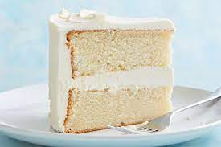

Vanilla Cake

Description
A basic sponge enriched with vanilla and typically covered in a plain buttercream
Ingredients
- 175g (6oz) margarine or softened butter
- 175g (6oz) caster sugar
- 3 large eggs
- 175g (6oz) self-raising flour, sifted
- 1 tsp baking powder
- 1tsp vanilla extract
- pinch of salt
Steps
- Heat the oven to 180°C (gas mark 4)
Lightly grease an 18cm (7in) round cake tin
with a little extra butter or margarine
and cut a piece of greaseproof paper or non-stick baking parchment
to fit the base of the tin
- Put all the ingredients into a large mixing bowl
and beat with a wooden spoon or a hand-held mixer for 1 minute,
or until just combined
It's important not to beat the batter too much
just long enough to make it smooth
- Pour or spoon the mixture into the tin
smooth the top and bake on the middle shelf of the oven
for about 45-50 minutes
The cake is cooked when it looks well risen and golden
the top should spring back when lightly touched with a fingertip
Another test is to insert a skewer into the centre of the cake
it should come out clean
- Let the cake sit in the tin for 5 minutes
then gently run a knife around the edge
and turn it out onto a wire rack to cool
Serve dusted with icing sugar.